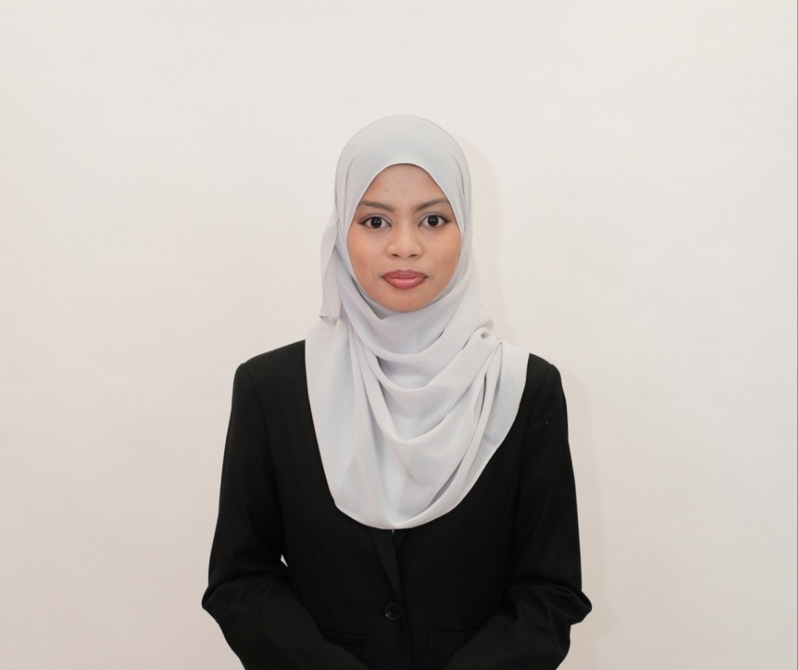

Project 1: Early Development of Personal Portfolio
A responsive website built using only HTML and CSS.
Draft 1
Bachelor of Computer Science (Bioinformatics) with Honours | Universiti Teknologi Malaysia
I am a Bioinformatics student at the Faculty of Computing, UTM Johor Bahru. I am passionate about biology and exploring how technology can solve real-world problems. Outside of coding, I enjoy reading mysteries—especially those by Agatha Christie.